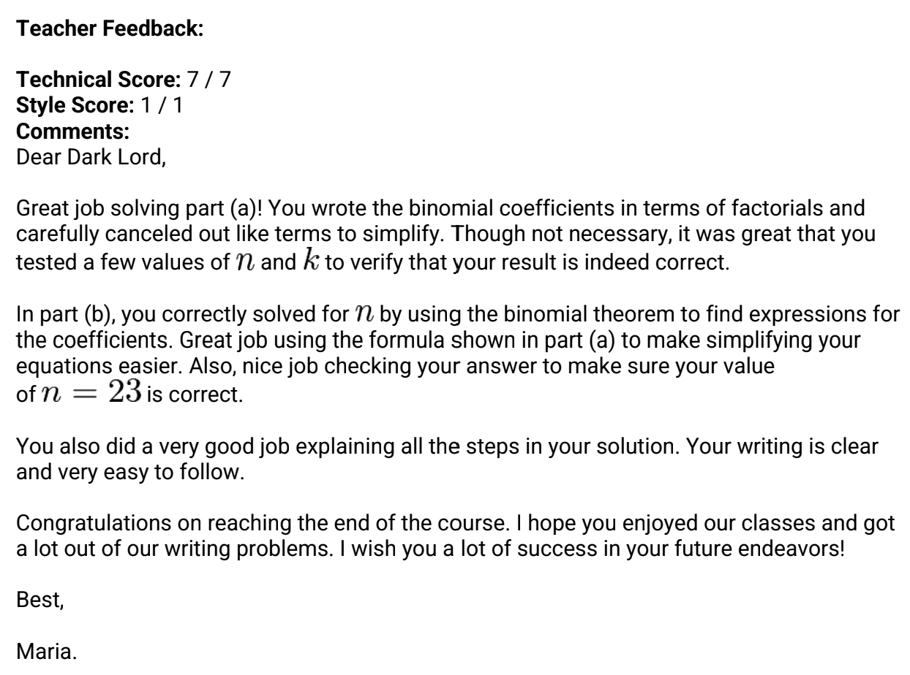

MATH
What motivates me to learn is that learning new things is fun. I think math is really fun, it captivates me and inspires me to learn more. I even enjoy reading math textbooks in my free time. As Michaelangelo famously said, “I am still learning.”
MATH ACHIEVEMENTS
My passion for problem-solving motivated me to participate and win several awards in different math competitions.
American Invitational Mathematics Examination (AIME) Qualifier, 2023 (7th grade)
American Mathematics Competition 8 (AMC8), 2023 - Honor Roll Certificate (7th grade)
American Mathematics Competition 10 (AMC10), 2022 - Certificate of Achievement (7th grade)
North South Foundation (NSF) National Finals - Math Level 2, 2021 - Placed 94th (5th grade)
Math Kangaroo, 2020 - Level 4 - Placed 4th in Nationals (4th grade)
Regional mathleague.org, 2018 placed 3rd and qualified for State Level (3rd grade)
AoPS Intro to Counting and Probability Math Work Sample, 6th grade
Teacher Feedback
APPLICATIONS OF MATH IN REAL LIFE
Mandelbrot Set
I read about the Mandelbrot Set in a math textbook and was intrigued by its self-repeating nature and beauty. I decided to code a model of it so that I could understand the complexity of it a little better. After a lot of reading and rereading, I was able to produce this image of the fractal. Throughout the process, I learned a lot about fractals, one of the least studied areas of math (even by math majors!).
GUI Calculator
This calculator was one of the first GUI (Graphical User Interface) apps I coded. I wanted to create a project that combined coding with my love for math, so a calculator was the natural answer. It can perform all the basic operations, as well as find the remainder, raise the number to the nth power, and take the nthroot.
KidNuz!
I enjoy sharing my love and passion for math with everyone. When my news podcast, KidNuz, shared the news about the New Orleans High school students that found new way to prove the Pythogorean theorem, they made a few mathematical errors. I was excited to share my understanding of the subject so that all the kids listening to the news could benefit from the right information. And of course, the shoutout I received on the podcast for my efforts was definitely the cherry on top!
Awesome Desmos Graphs
I was experimenting with rectangular equations in which x was swapped out for r, and y was switched out for θ. This specific graph is damped motion when you switch it back.
Try it out!I began by combining random functions to create a weird shape. I then pictured a face with eyebrows and a beard, and thought that it would be hilarious to add in the rest!
Try it out!